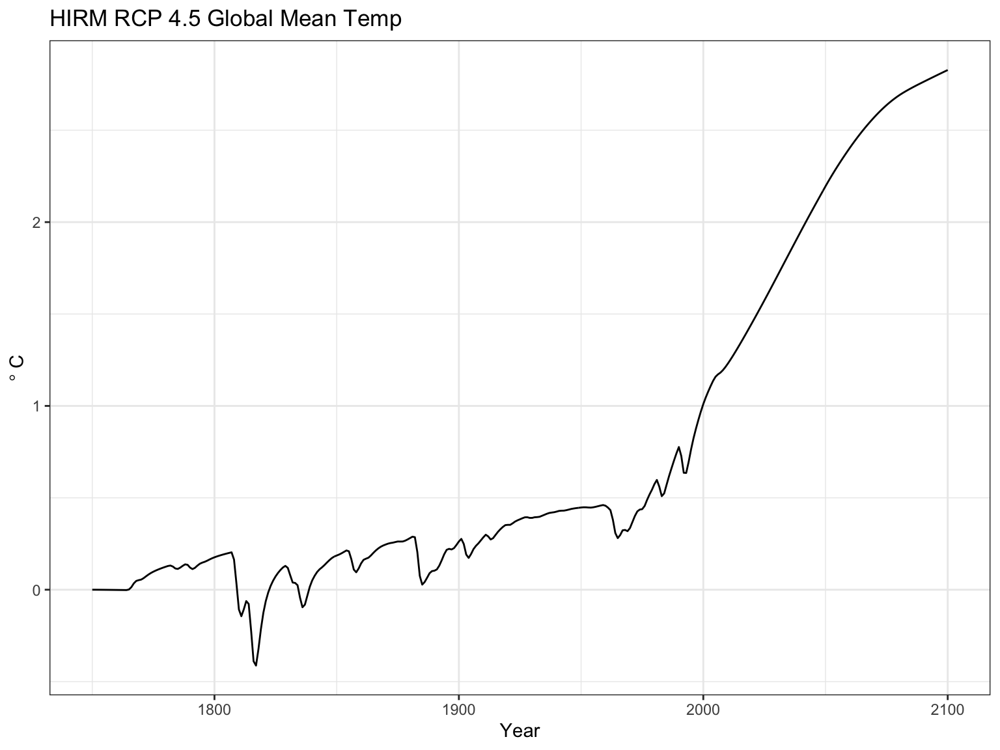
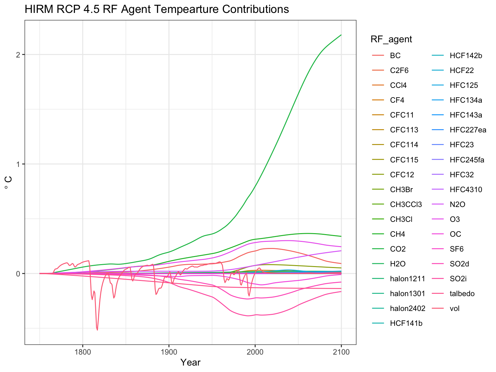

HIRM-basics.RmdThis vignette provides a basic introduction for running HIRM. Here we will show how to use HIRM with its built-in inputs derived from Hector. Although HIRM could be set up use inputs from any process-based model.
First, load the hirm package and other helpful pacakges.
Then load the built-in HIRM inputs.
# This is Hector's general impulse response function (IRF). The relationship between global mean temperature and radiative forcing is the same for all aerosols and ghgs. irf_input <- Hector_IRF
# This is a list of radiative forcing pathways (RF) for different aerosols and ghgs for different RCP scenarios. rf_inputs <- Hector_RF
# The configuration matrix will be used to pair IRFs with RF pathways. config_matrix <- Hector_ConfigMatrix
Get an idea of what the configuration matrix looks like.
# In this matrix each row represents a different RF pathway and the columns represent different IRFs. (Hector has a single general IRF while other process-based models have multiple). Currently all of the entries in the matrix are set to 0, meaning that non of the RF pathways are paried with the IRF. head(config_matrix) #> general_hector #> abrupt-4xCO2_FCO2 0 #> abrupt-4xCO2_Ftot 0 #> rcp26_FBC 0 #> rcp26_FC2F6 0 #> rcp26_FCCl4 0 #> rcp26_FCF4 0
Now all of the HIRM inputs are loaded modify the configuration matrix to set HIRM up for a specific run. For this example let’s set HIRM up to run the rcp45 scenario.
# Figure out which RF pathways have a pattern that matches our scenario name. scenario_name <- 'rcp45' rf_indices <- which(grepl(pattern = scenario_name, x = row.names(config_matrix))) # For each rcp45 RF pathway change the entry from a 0 to 1 so that HIRM will pair Hector's general IRF with the RF pathway input. config_matrix[rf_indices, 1] <- 1
Use the inputs in the impulse respose model (IRM).
rslt <- core_IRM(config_matrix = config_matrix, rf_list = rf_inputs, irf_list = irf_input)
Plot the tempearture results.
ggplot(data = rslt$total_temp) + geom_line(aes(year, value)) + theme_bw() + labs(title = "HIRM RCP 4.5 Global Mean Temp", y = expression(degree~'C'), x = 'Year')

Plot the tempearture contribution of each radiative forcing agent.
ggplot(data = rslt$temp_contributions) + geom_line(aes(year, value, color = RF_agent)) + theme_bw() + labs(title = "HIRM RCP 4.5 RF Agent Tempearture Contributions", y = expression(degree~'C'), x = 'Year')
